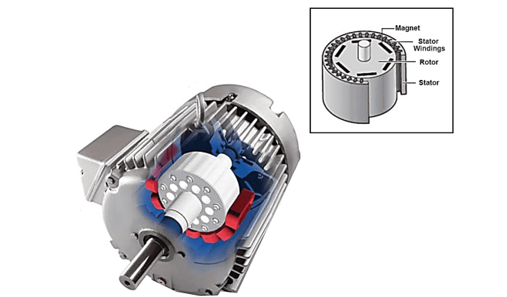

Permanent Magnet Synchronous Motor
Introduction
In an electrical system, synchronous motors are the most widely used steady-state 3-phase AC motors, which convert electrical energy into mechanical energy. This type of motor operates at synchronous speed, which is constant and it is synchronous with the supply frequency and the period of rotation is equal to the integral no. of AC cycles. That means the speed of the motor is equal to the rotating magnetic field. This type of motor mainly used in power systems to improve the power factor. There are non-excited and DC excited synchronous motors, which operate according to the magnetic power of the motor. Reluctance motors, hysteresis motors, and permanent magnet motors are the non-excited synchronous motors.
A permanent magnet synchronous motor (PMSM) - is a synchronous electric motor whose inductor consists of permanent magnets.
The permanent magnet synchronous motors are one of the types of AC synchronous motors, where the field is excited by permanent magnets that generate sinusoidal back EMF. It contains a rotor and stator same as that of an induction motor, but a permanent magnet is used as a rotor to create a magnetic field. Hence there is no need to wound field winding on the rotor. It is also known as a 3-phase brushless permanent sine wave motor.
The permanent magnet synchronous motor diagram is shown below.

The permanent magnet synchronous motors are very efficient, brushless, very fast, safe, and give high dynamic performance when compared to the conventional motors. It produces smooth torque, low noise and mainly used for high-speed applications like robotics. It is a 3-phase AC synchronous motor that runs at synchronous speed with the applied AC source.
Instead of using winding for the rotor, permanent magnets are mounted to create a rotating magnetic field. As there is no supply of DC source, these types of motors are very simple and less cost. It contains a stator with 3 windings installed on it and a rotor with a permanent magnet mounted to create field poles. The 3-phase input ac supply is given to the stator to start working.
Construction of Permanent magnet synchronous motor
A permanent magnet synchronous motor, like any rotating electric motor, consists of a rotor and a stator. The stator is the fixed part. The rotor is the rotating part.
Typically, the rotor is located inside the stator of the electric motor, there are also structures with an external rotor - inside out electric motors
The rotor consists of permanent magnets. Materials with high coercive force are used as permanent magnets.
According to the rotor design, synchronous motors are divided into:
- Electric motors with salient pole rotor;
- Electric motors with non-salient pole rotor.
An electric motor with non-salient pole rotor has an equal direct and quadrature inductances Ld = Lq, whereas for an electric motor with salient pole rotor the quadrature inductance is not equal to the direct Lq ≠Ld.
Working principle of a synchronous motor
The principle of operation of a synchronous motor is based on the interaction of the rotating magnetic field of the stator and the constant magnetic field of the rotor. The concept of the rotating magnetic field of the stator of a synchronous motor is the same as that of a three-phase induction motor.
The magnetic field of the rotor, interacting with the synchronous alternating current of the stator windings, according to the Ampere's Law, creates torque, forcing the rotor to rotate.
Permanent magnets located on the rotor of the PMSM create a constant magnetic field. At a synchronous speed of rotation of the rotor with the stator field, the rotor poles interlock with the rotating magnetic field of the stator. In this regard, the PMSM cannot start itself when it is connected directly to the three-phase current network (current frequency in the power grid 50Hz).
Advantages
The advantages of permanent magnet synchronous motor include,
- provides higher efficiency at high speeds
- available in small sizes at different packages
- maintenance and installation is very easy than an induction motor
- Capable of maintaining full torque at low speeds.
- high efficiency and reliability
- gives smooth torque and dynamic performance
Disadvantage
The disadvantages of permanent magnet synchronous motors are,
- These type of motors are very expensive when compared to induction motors
- Somehow difficult to start-up because they are not self-starting motors.
Applications
The permanent magnet synchronous motors applications are,
- Air conditioners
- Refrigerators
- AC compressors
- Washing machines, which are direct-drive
- Automotive electrical power steering
- Machine tools
- Large power systems to improve leading, and lagging power factor
- Control of traction
- Data storage units.
- Servo drives
- Industrial applications like robotics, aerospace, and many more.

Buy full version to unlock all the content & features